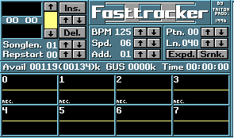
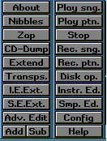

不明な用語はこちらを参照してください

BPM(Beats per minute)
曲全体の速さを設定します。入れた値が１分間に鳴る四分音符の回数になります。
また一秒あたりＢＭＰ*２/５のＴｉｃｋが入ることになります。
デフォルトは１２５。この場合一秒に５０ｔｉｃｋ入ります。
Ｓｐｄ（Ｓｐｅｅｄ）
１ラインに入るＴｉｃｋの値を設定します。
デフォルトは６。この場合１ラインで１６部音符が一回鳴ります
３の場合は３２分音符が一回、１２の場合８分音符が一回鳴ります
Ａｄｄ
パターンを編集する際にＮｏｔｅやコマンドを挿入したときにカーソルがジャンプする数です
２とすればＮｏｔｅを挿入したときにカーソルが２ライン下にジャンプします
Ｐｔｎ
現在のパターンの番号です
Ｌｎ
現在のパターンのラインの数です
デフォルトは４０。この場合１パターンに４０のＮｏｔｅが挿入できます
Ｅｘｐｄ（Ｅｘｐａｎｄ）
現在のパターンのライン数を倍に広げます
Ｓｈｎｋ（Ｓｈｒｉｎｋ）
現在のパターンのライン数を半分に縮めます
Ｉｎｓ
ソングリストにパターンを挿入します。↑↓カーソルでパターンの番号を変えられます
Ｄｅｌ
ソングリストのパターンを消去します。↑↓カーソルでパターンの番号を変えられます
Ｓｏｎｇｌｅｎ
ソングリストに挿入されているパターンの数です。↑↓カーソルで値を変更できます
Ｒｅｐｓｔａｒｔ
曲を再生して最後までいったときに戻って再生される位置です↑↓カーソルで値を変更できます
Ｓｃｏｐｅｓ
下の番号が振られている枠の事です。この番号が各トラックに対応しています。
マウス左クリックでチャンネルのOn/Offを切り替えます
マウス右クリックでマルチレコードの際の録音On/Offを切り替えます。
マウス両クリックでソロ演奏のOn/Offを切り替えます

Ａｂｏｕｔ
ＦＴ２について・・・
Ｎｉｂｂｌｅｓ
おまけゲームです。息抜きに。
Ｚａｐ
曲クリアを行います
All
現在読みこまれている曲のすべての情報を消去します
Song
全トラックを消去します
Instruments
全インストゥルメントを消去します
ＣＤ－Ｄｕｍｐ
ＣＤから音を直接抜き出します
Ｅｘｔｅｎｄ
パターン編集画面を拡大します
Ｔｒａｎｓｐｓ．（Ｔｒａｎｓｐｏｓｅ）
移調を行います
Ｉ．Ｅ．Ｅｘｔ．（Ｉｎｓｔｒｕｍｅｎｔ Ｅｄｉｔｏｒ Ｅｘｔｅｎｓｉｏｎ）
インストゥルメントの拡張編集を行います
Ｓ．Ｅ．Ｅｘｔ．（Ｓａｍｐｌｅ Ｅｄｉｔｏｒ Ｅｘｔｅｎｓｉｏｎ）
サンプルの拡張編集を行います
Ａｄｖ．Ｅｘｔ
その他の設定を行います。具体的にはコピーアンドペーストの設定とトラックの
インストゥルメントの編集を行います。
Ｐｌａｙ Ｓｎｇ．（Ｐｌａｙ Ｓｏｎｇ）
曲の演奏を行います。
Ｐｌａｙ Ｐｔｎ．（Ｐｌａｙ Ｐａｔｔｅｒｎ）
パターンの演奏を行います
Ｓｔｏｐ
演奏を中断します
Ｒｅｃ．Ｓｎｇ．（Ｒｅｃｏｒｄ Ｓｏｎｇ）
曲をリアルタイムで録音します
Ｒｅｃ．Ｐｔｎ．（Ｒｅｃｏｒｅ Ｐａｔｔｅｒｎ）
パターンをリアルタイムで録音します
Ｄｉｓｋ．Ｏｐ．（Ｄｉｓｋ Ｏｐｅｒａｔｉｏｎ）
ファイルを編集します
Ｉｎｓｔｒ．Ｅｄ（Ｉｎｓｔｒｕｍｅｎｔ Ｅｄｉｔｏｒ）
インストゥルメントの編集を行います
Ｓｍｐ．Ｅｄ（Ｓａｍｐｌｅ Ｅｄｉｔｏｒ）
サンプルの編集を行います
Ｃｏｎｆｉｇ
システムの設定を行います
Ｈｅｌｐ
Ｈｅｌｐを呼び出します
① Ｓｒｃ．Ｉｎｓｔ．（Sourse Instrument）
② Ｄｅｓｔ．Ｉｎｓｔ．（Ｄｅｓｔｉｎａｔｉｏｎ Ｉｎｓｔｒｕｍｅｎｔ）
③ Ｓｒｃ．Ｓｍｐ．（Ｓｏｕｒｓｅ Ｓａｍｐｌｅ）
④ Ｄｅｓｔ．Ｓｍｐ．（Ｄｅｓｔｉｎａｔｉｏｎ Ｓａｍｐｌｅ）
⑤ Ｉｎｓｔｒｕｍｅｎｔ Ｓｅｌｅｃｔｏｒ画面の切り替え
⑥ 曲名
①と③はそれぞれのインストゥルメントとサンプルの番号を表します。
また選択されている部分が編集の際のSourse（元となる） Ｉｎｓtrument/Sampleとなります。
②と④で選択されている部分が実際に演奏されます。
また選択されている部分が編集の際のDestination（目的の）
Instrument/Sampleとなります。
またマウス右クリックでそれぞれの名前の編集が出来ます
① ノート
② インストゥルメント番号
③ Volume column
④⑤⑥ Ｅｆｆｅｃｔ ｄｉｇｉｔ
それぞれを編集するには録音可能状態にしてキーボードで打ちこんでいきます。
ノートの挿入に関してのキーボード操作はこちら
Volume column、Effectの挿入はカーソルをその場所に移動させて打ちこんでいきます。